Juspay builds payment infrastructure for enterprise businesses. Through Hyperswitch, we expanded into the US and European markets to support merchants operating globally.
As we started working closely with merchants in these markets, one pattern became impossible to ignore: merchants knew how much they were paying, but had very little visibility into what changed, why it changed, or where their money was going.
The numbers were too large to ignore, yet investigating them remained a heavily manual process. This pushed us to dig deeper into how payment costs were structured, why they were so difficult to explain, and where visibility was breaking down.
On the surface, card payments appear simple. A customer pays, and the merchant gets paid.
In reality, every transaction passes through multiple participants before the money reaches the merchant's bank account — each introducing its own cost.
Payment costs are one of the largest variable expenses for businesses operating at scale. While the percentage may appear small, its impact compounds quickly as payment volume grows.
A merchant processing $500M annually at an average 2% payment cost spends nearly $10M every year on payment processing alone.
At this scale, even marginal inefficiencies can quietly translate into millions of dollars in avoidable spend.
Merchants could see that costs had increased, but understanding what changed, why it changed, and what to do next often required manually piecing together fragmented reports, invoices, and network documentation.
— This is where HyperSense begins.
HyperSense is a payment cost observability platform built to help merchants understand where their payment costs come from, why they change, and what actions to take next.
It connects fragmented payment data spread across processor invoices, settlement reports, and transaction logs into a single investigation workflow.
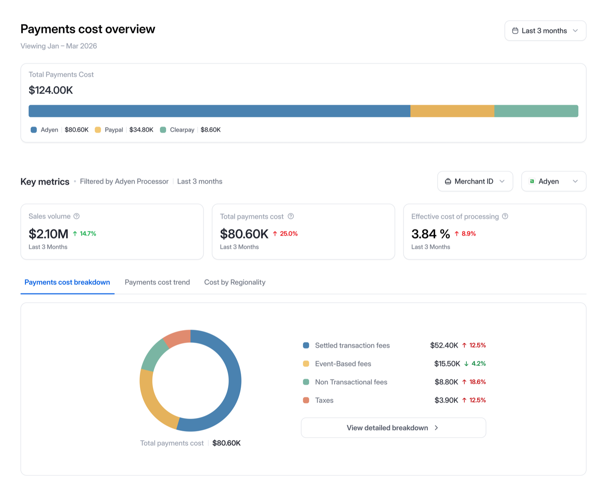
Payment cost observability was a new problem space for us. Before we could make costs observable, we first had to understand the ecosystem itself, how payment costs were structured, why merchants struggled to investigate them, and where visibility was lacking.
As a team of seven, our goal was to understand how payment costs were structured, where merchants lacked visibility, and why investigating cost changes remained a largely manual process. We looked at processor invoices, fee structures, and operational workflows to identify where the biggest gaps existed and where the product could create the most value.
As the solo product designer, I worked closely with product, engineering, and data teams to translate that understanding into product experiences that helped merchants move from fragmented data to clear, actionable answers.
Every card payment looks simple from the outside — tap, approve, done. But every transaction the merchant processes comes with a payment's cost, and how that cost is calculated depends on the pricing model a merchant chooses.
The industry primarily operates on two models: Blended pricing and IC++ pricing.
Blended pricing applies a single fixed rate to every transaction. It's simple and predictable, but at high volumes, merchants often end up paying more than necessary.
IC++ pricing, on the other hand, charges the actual cost of processing for each transaction, creating opportunities to reduce costs at scale. That's why enterprise merchants prefer IC++. But the same transparency that creates savings also introduces a new layer of complexity.
Because in IC++ pricing happens at a transaction level, no two transactions are guaranteed to cost the same. Each transaction cost is determined by card type, authentication, settlement timing, geography, and data quality — each variable quietly shifts the fee tier. Most merchants never see this happen.
Most enterprises on IC++ pricing consistently pay more than they should. The gap between what they should pay and what they actually pay can quietly reach 7–10% of their total payment costs.
Knowing what merchants were charged is rarely straightforward. Finding that answer often means reconciling reports from multiple processors.
No single report tells the full story. Teams work across invoices, settlement reports, and network documentation to reconstruct what they were charged and why.
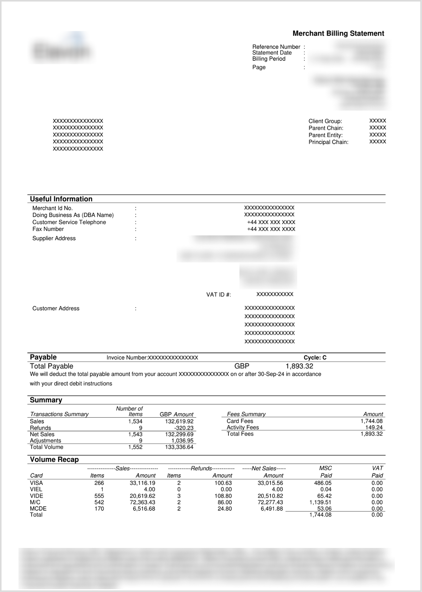
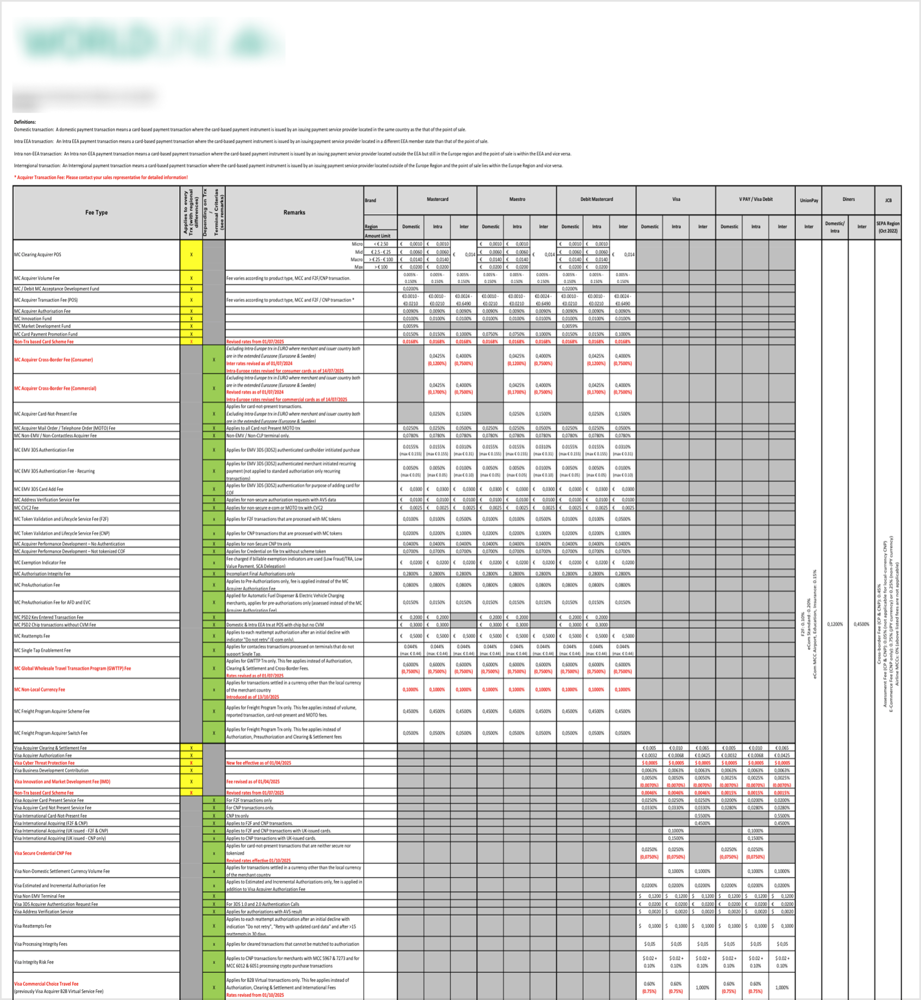
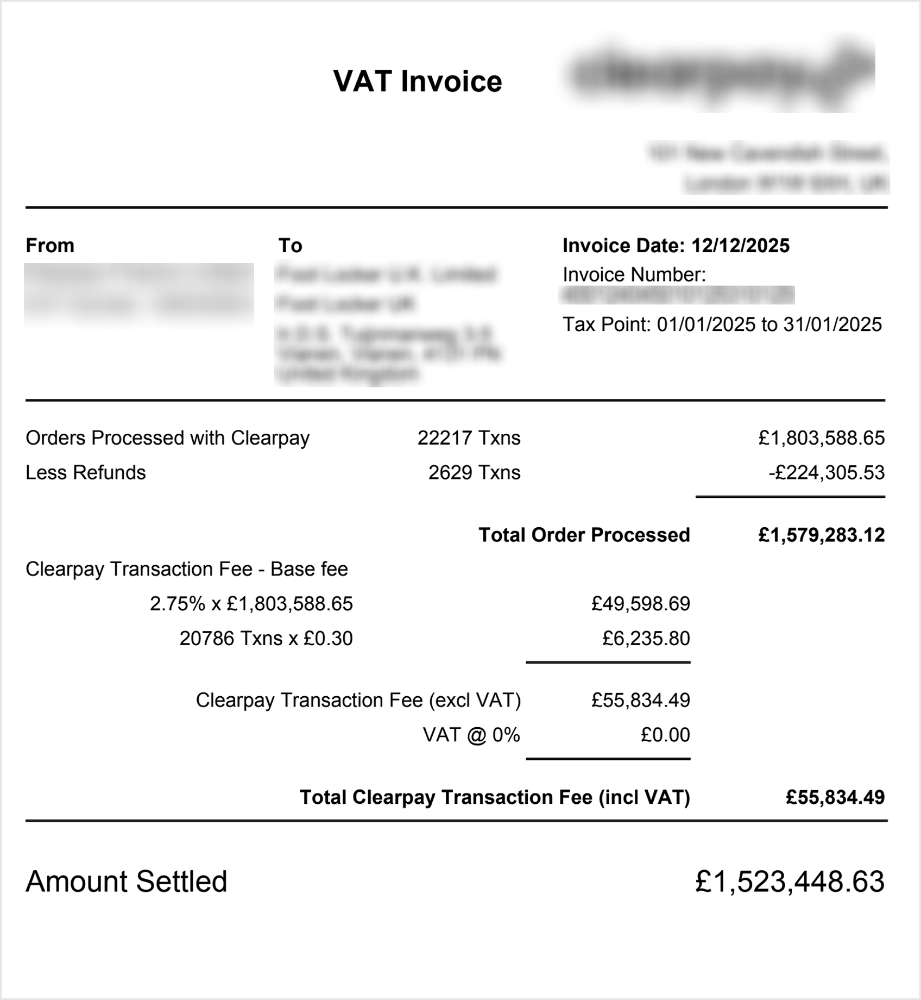
At the transaction level, small operational decisions can quietly increase costs. Something as simple as delayed settlement, missing authentication data, or incorrect merchant classification can downgrade a transaction and push it into a more expensive fee tier.
At enterprise scale, these small inefficiencies compound into millions of dollars of avoidable spend every year.
At enterprise scale, small percentage changes can quietly translate into millions of dollars in avoidable spend every year.
The challenge of understanding payment costs isn't universal. It exists primarily in markets where merchants are directly exposed to the underlying cost of processing for every transaction.
In India, domestic payments largely run on UPI, where transaction costs are minimal. In many Southeast Asian and Latin American markets, merchants operate on simplified or blended pricing models that hide much of the underlying complexity.
The problem becomes significant in markets such as the United States and Europe, where enterprise merchants commonly operate on IC++ pricing and are directly exposed to interchange, scheme fees, and processor markups.
Once we understood where the problem existed, we needed to understand who was responsible for solving it. We discovered that payment costs weren't owned by a single team. Three different stakeholders interacted with the same problem from different angles — each carrying a different responsibility, but all missing the same visibility.
Every month, processor invoices arrive with hundreds of fee line items that need to be reconciled, explained, and defended before the billing cycle closes.
Payment costs are one of the largest variable expenses in the business, often representing 1.5–2.2% of revenue. When those numbers move, finance teams are expected to explain why and predict what happens next.
Routing rules, authentication settings, and processor configurations all influence payment costs. But their impact often appears weeks later, long after the decision was made.
By this point, we understood the ecosystem. The challenge was turning a fragmented payment system into a coherent cost story that different teams could trust and act on.
Although each stakeholder entered the investigation from a different point, every investigation eventually converged on the same set of questions.
That became our starting point.
Payment cost systems are naturally fragmented. Organising the product around processors, fee types, or reports would simply mirror that complexity.
Instead, we looked at how investigations actually unfolded. Although teams entered from different starting points, they were all trying to answer the same underlying questions.
We designed the product around how teams investigate costs. Rather than asking teams to manually piece together fragmented reports, each module guided them toward the answers they needed — from understanding what changed to deciding what to do next. Together, they form a coherent cost story that teams could trust and act on.
Defining the investigation flow solved the product problem. Designing an experience around it introduced a new set of constraints.
Every decision now had to balance trust, flexibility, and depth — without breaking the investigation flow.
Before teams could act on payment costs, they first needed confidence in what they were seeing.
The challenge wasn't just simplifying the data. It was presenting complex, multi-layered financial information in a way that felt reliable enough for teams to make operational decisions.
Create interfaces that move users from interpretation → confidence → action, without requiring a second source to validate the data.
IC++ exposes a detailed breakdown of interchange, scheme fees, and processor markups. Blended pricing compresses all of that into a single effective rate.
These models don't just differ in pricing. They expose fundamentally different levels of visibility.
Create a unified experience that adapts to both granular IC++ data and simplified blended pricing.
Not every increase in payment cost is a problem. Some are expected. Some are strategic. Some require immediate attention.
The same cost increase could represent normal business growth, a network change, or preventable leakage.
Help users distinguish normal cost movement from preventable leakage that requires action.
Payment Analysts needed transaction-level detail to investigate root causes. Finance leaders needed a clear cost story to explain business impact. Operations teams needed visibility into the decisions influencing costs.
All three users depended on the same underlying data, but each needed a different level of depth and context.
Provide executive clarity at a glance while preserving transaction-level depth on demand.
With the investigation flow established, the next challenge was turning it into a cohesive product experience.
Each module served a distinct purpose, but together they needed to feel like a single investigation that teams could navigate naturally every month.
Before teams investigate anomalies or optimize costs, they first need to understand where they stand today.
We designed Overview as the system's source of truth: a unified cost layer that consolidates fragmented signals into a single cost story.
Creating that experience wasn't straightforward. The same interface needed to work across fundamentally different merchant realities — from single processors to multi-PSP setups, and from simplified blended pricing to fully transparent IC++ models.
Overview answers three fundamental questions:
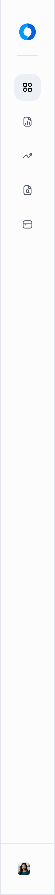
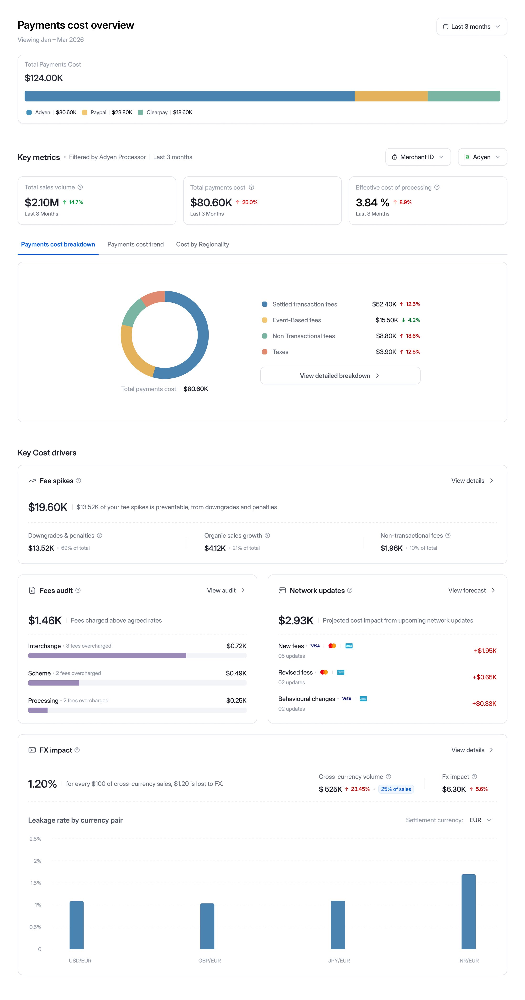
Full per-processor fee breakdown — every cost component stays visible.
Overview answered what the cost story looks like at a glance. The next step was understanding where that story was coming from.
A single number rarely explains why costs change. Teams needed the ability to break costs down across the dimensions that shape them — processors, regions, corridors, fee types, and currencies.
The challenge was balancing analytical depth with usability. We needed to create a flexible investigation surface that supported exploration without overwhelming teams with raw data or forcing them into rigid analysis paths.
We designed Drill-Down as a focused analytical workspace that helps teams answer three questions:
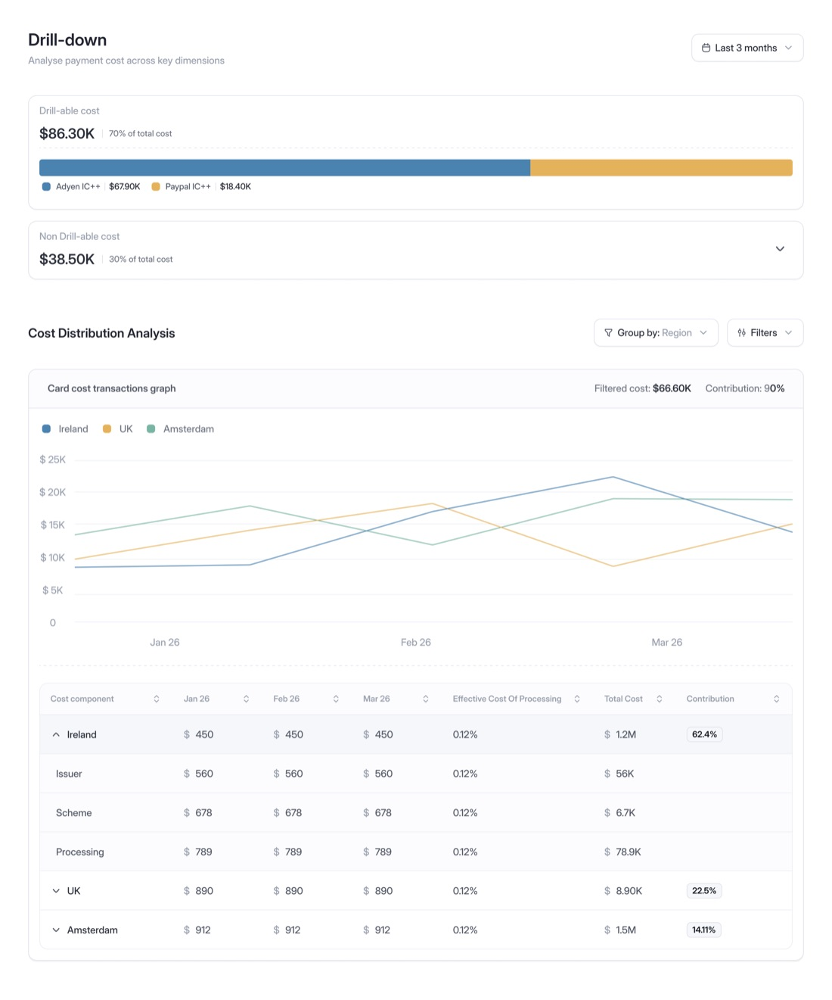
Drill-Down helped teams understand where costs were coming from. The next challenge was determining whether those changes were expected or required action.
Not every increase in payment cost is a problem. Costs can rise because of healthy sales growth, expansion into new markets, recurring downgrades, or network-driven changes.
The challenge was helping teams quickly separate normal business movement from preventable leakage — without requiring them to manually inspect reports or trace every fee line item.
We designed Fee Spikes as an early signal system that helps teams answer three questions:
Instead of surfacing anomalies in isolation, the experience framed them within business context — helping teams understand whether they were looking at healthy growth or an issue that required immediate attention.
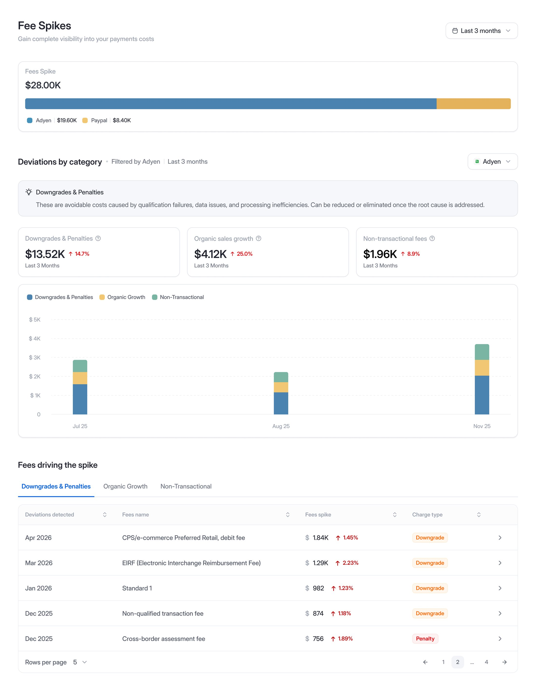
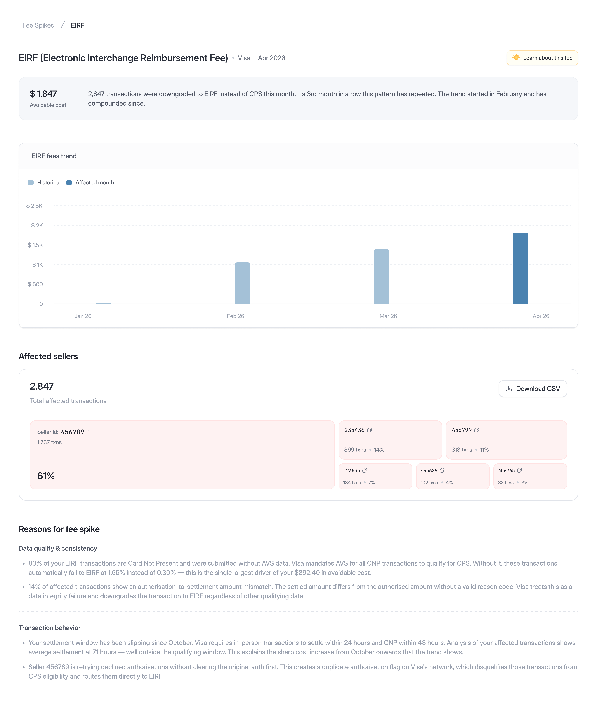
2,847 transactions were downgraded to EIRF, creating $1,847 in avoidable cost over three consecutive months.
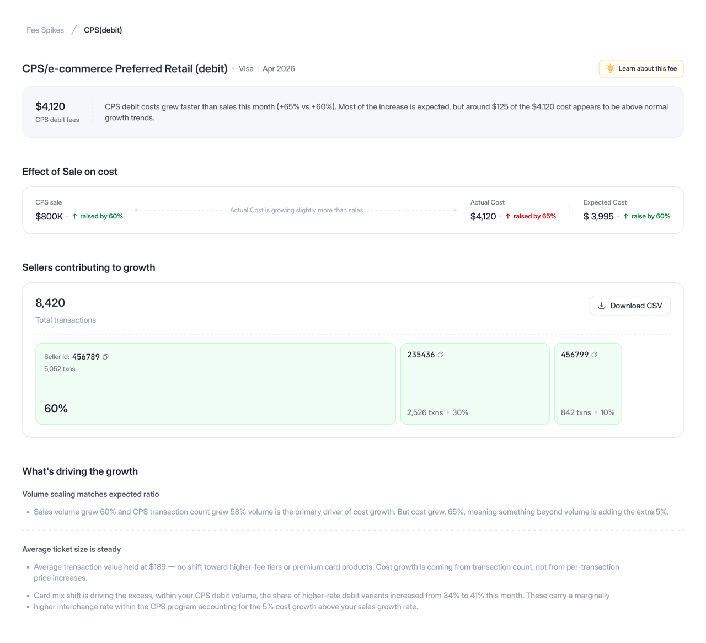
Costs rose 65% while sales grew 60% — the increase was largely explained by healthy business growth.
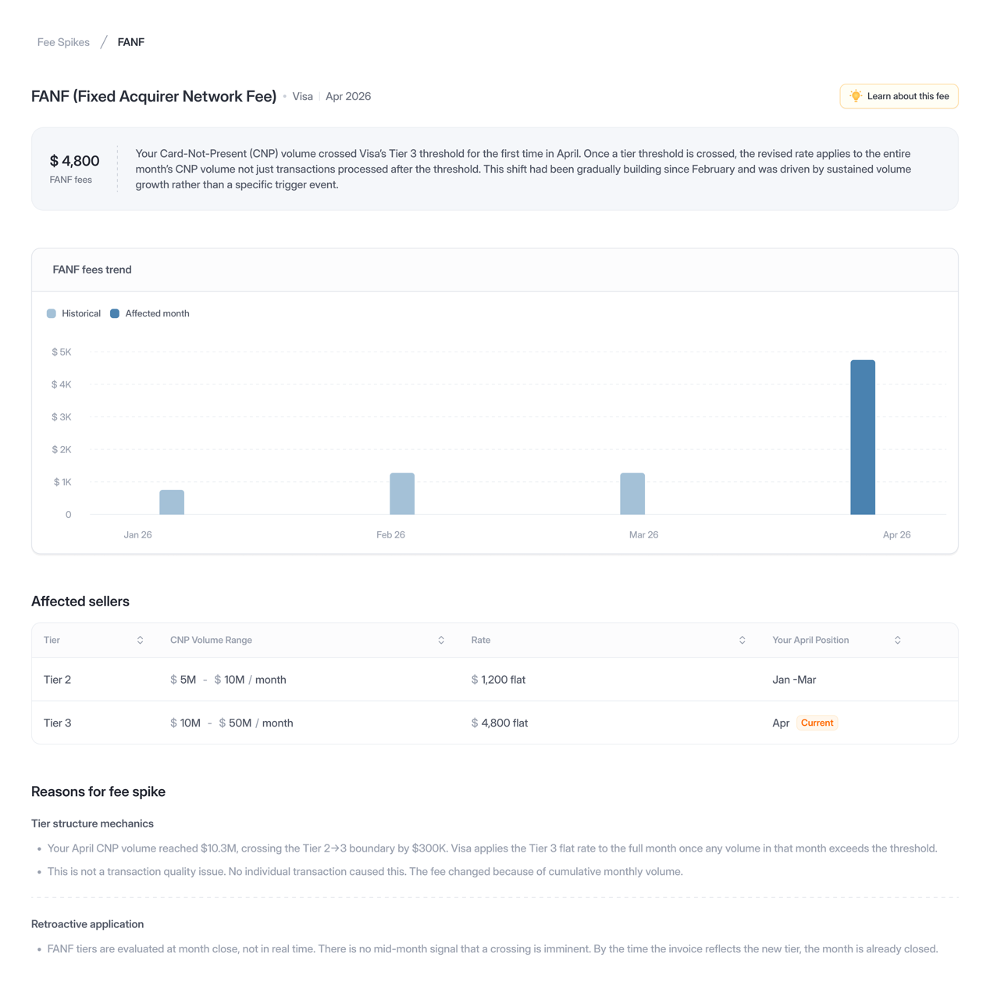
CNP volume crossed Visa's Tier 3 threshold, increasing FANF from $1,200 to $4,800 for the month.
Fee Spikes helped teams identify where action was needed. The next question was validating whether they had been charged correctly in the first place.
Processor invoices show what was charged, but rarely explain whether those charges were accurate.
A line item such as "CPS Retail" or "EIRF" offers little insight into whether the correct rate was applied, which transactions were downgraded, or how much those discrepancies ultimately cost.
The challenge was bringing together multiple layers of information — contracted rates, applied rates, fee variances, and transaction-level evidence — into a single verification flow.
We designed Audit as a structured investigation experience that helps teams answer three questions:
Instead of forcing teams to manually reconcile invoices, contracts, and transaction exports, the experience progressively moved from summary-level variances down to transaction-level evidence.
Every discrepancy became traceable, explainable, and defensible.
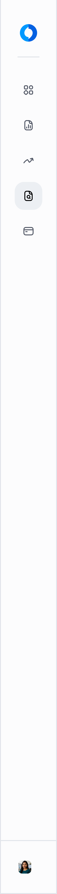
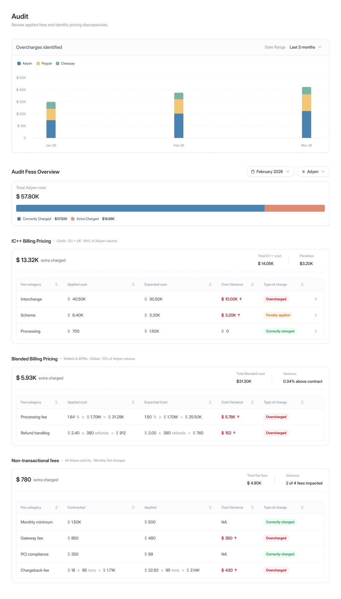
Audit helped teams understand what happened in the past. The final challenge was helping them prepare for what would happen next.
Card networks like Visa and Mastercard regularly introduce new fees, revise existing programs, and update qualification rules. These changes are published weeks in advance, but are often buried inside dense technical documentation.
The challenge wasn't access to information. It was understanding which changes actually mattered to a merchant's business — and what their financial impact would be.
Without that visibility, most teams only discovered the impact after it appeared on the following month's invoice.
We designed Forecast to translate network updates into merchant-specific insights by modelling upcoming changes against each merchant's actual transaction behaviour.
It helps teams answer three questions:
Instead of surfacing every published update, Forecast prioritised only the changes relevant to the merchant's business and estimated their projected financial impact in real currency terms.
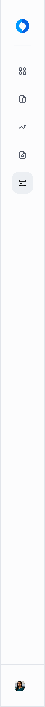
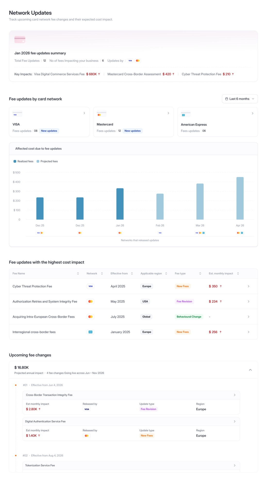
One thing solving for complex systems taught me:
← Back to selected work"Clarity isn't achieved by hiding complexity. It's achieved by making it understandable."
Thank you for taking the time to follow the journey.